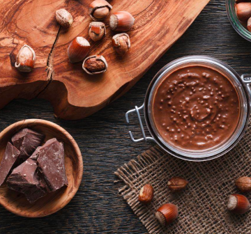
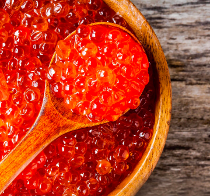
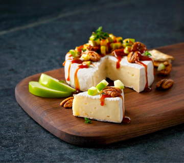
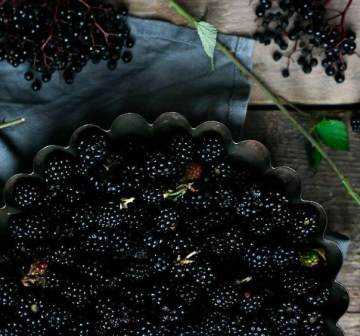
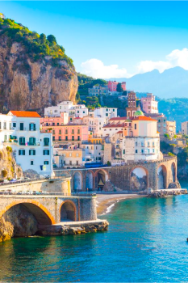

БЛОГ
НЕОБЫЧНЫЕ ПИЦЦЫ

Пицца с нутеллой и орехами
Как насчет такого десерта? По вкусу он напоминает итальянский перекус — хлеб с нутеллой. Только вот выпеченный коржик смазывают сначала нежной рикоттой, затем знаменитой шоколадной пастой, а сверху посыпают дробленым фундуком.По задумке повара, сочетание нежной пасты с сыром подходит твердым и хрустящим орешкам.
Пицца с икрой
Начнем с простого: в одном из нью-йоркских небоскребов подают поистине богатое блюдо. Хотя, наверное, пицца с красной и черной икрой подходит для русской кухни. Попробовать изысканное блюдо можно и в баре под названием «НоЛита», оформленном в советском стиле.


Пицца с карамелью и сыром
Пицца с карамелизированным луком, яблоками и козьим сыром. Яблоки и лук как ингредиенты могут звучать странно, но при запекании они смешиваются вместе, чтобы создать интересную сладкую и пикантную вкусовую палитру. Повара советуют добавить немного тимьяна и меда, которые придадут еще большей сладости начинке и приятной свежести.
Пицца с ежевикой
Такую сладкую пиццу готовят на гриле с козьим сыром,фисташками и медом Ее не запекают как итальянскую классическую «Маргариту». Подавайте эту пикантную сладкую закуску на следующем барбекю на заднем дворе или вечеринке у бассейна.

ГАСТРОНОМИЧЕСКИЙ ТУР ПО СТРАНАМ

НЕАПОЛЬ
Настоящий рай для фанатов итальянской кухни. Здесь работает 12 000 различных пиццерий. Выбрать лучшее заведение действительно проблематично. Однако каждый местный житель прекрасно знает, где самая вкусная пицца – это Da Michele. Небольшой ресторанчик, работающий уже практически сотню лет. Здесь были такие звезды, как Диего Марадона и Джулия Робертс, все они были в восторге от предложенных блюд.В этом заведении отказались от всех новомодных рецептов и сотен начинок, предлагают исключительно классику – Маргарита и Маринару. Стоит сразу приготовиться отстоять очередь, она в любое время есть. Хотя оно того стоит, сногсшибательное тесто, роскошный сыр, соус обеспечат настоящий праздник желудку.ПАРИЖ
Французская кухня славится самыми разнообразными блюдами, интересными рецептами, винами. Отправляясь в гастрономический тур во Францию, нужно обязательно посетить небольшой ресторанчик Мария Луиза в Париже. Здесь работают повара, которые применяют настоящую неаполитанскую рецептуру. Хотя это им не мешает экспериментировать и предлагать посетителям довольно оригинальные варианты пиццы – с рукколой, различными видами перца, артишоками.Заказать в Мария Луизе нужно Диабло. Толстое тесто покрыто объемным слоем сыра и дополнено многочисленными кусочками пепперони.НЬЮ-ЙОРК
Ежегодно этот город посещают тысячи туристов. Здесь работает множество кафе, ресторанов. Однако каждый фанат пиццы обязательно отправится в Гримальди. Заведение располагается под Бруклинским мостом. Здесь часто встретить различных звезд. Несколько раз видели супругу бывшего президента США Барака Обамы. Она обожает Пепперони.Учитывая высокую популярность заведения и огромные очереди, недавно в городе начали работать еще несколько филиалов. Один находится на Манхэттене, а другой в Куинсе. Приехав в город «Большого яблока», обязательно нужно порадовать себя вкуснейшей пиццей, посетив представленное заведение.МИЛАН
Милан является очень привлекательным место для туристов. Хотя большинство из них приезжает, чтобы приобрести различные модные вещи, некоторые с целью посетить небольшую пиццерию Pizzeria Spontini. Здесь можно заказать исключительно Маргариту, других вариантов в меню нет. Однако готовят ее фантастически, буквально дух заворачивает от исходящего аромата от запеченного кусочка.Совершенно не обязательно оставаться в заведении, чтобы полакомиться столь вкусным блюдом. Пиццу могут упаковать в удобный бумажный сверток, из которого легко извлекать очередной кусочек и поедать его по дороге к очередному бутику или достопримечательности.Отзывы

Сергей Ковбель

Хотел по благодарить!) спасибо за то что положили еще один коктейль) ребят все на уровне все очень вкусно спасибо вам огромное Рекомендую всем )
27 Апреля, 2023г.
Александр Александров
Отличное место, хорошо предусмотренные отгороженные зоны отдыха (столики с диванами). Вкусная пицца.Хороший сервис, учтивые официанты. Хорошее обслуживание!
19 Апреля, 2023г.
Яна Гайнулина
Отличная пицца, оперативная доставка, всегда вкусно, привозят огненную пиццу, спасибо всей команде работающей в данной компании, молодцы.
19 Апреля, 2023г.